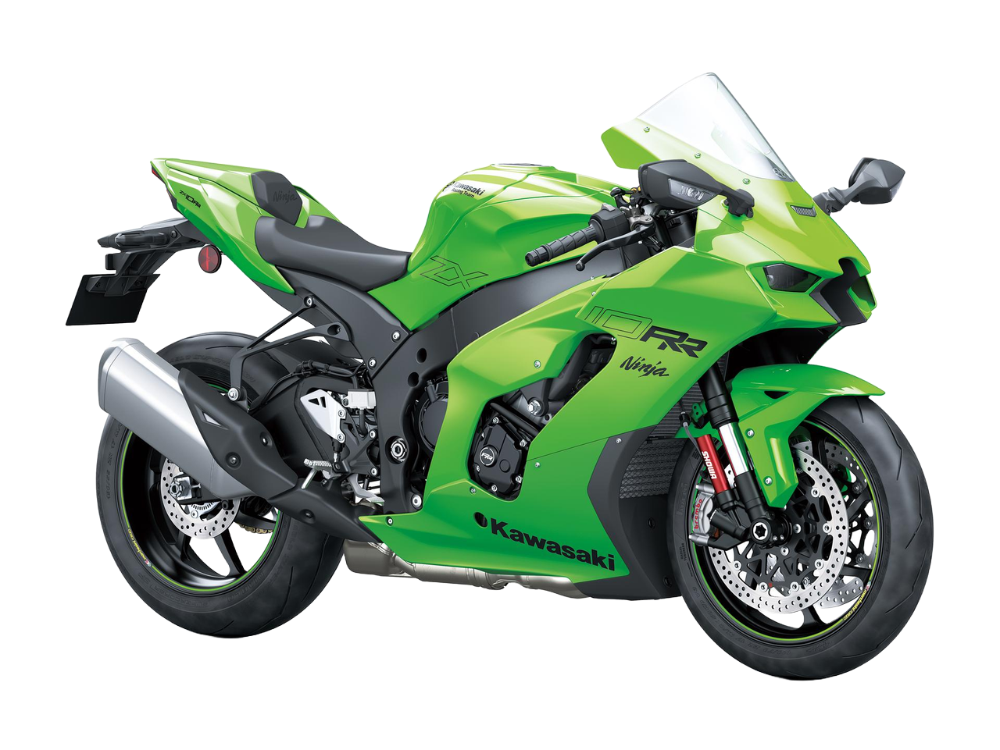
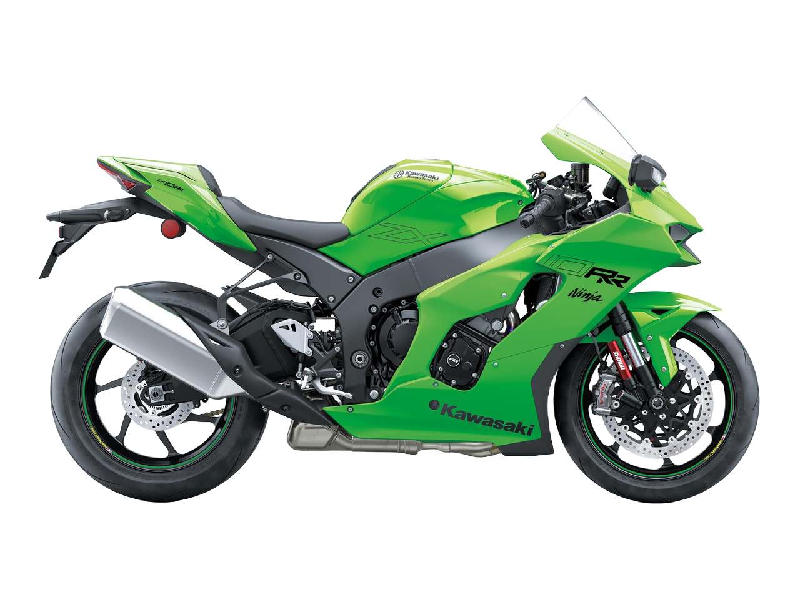
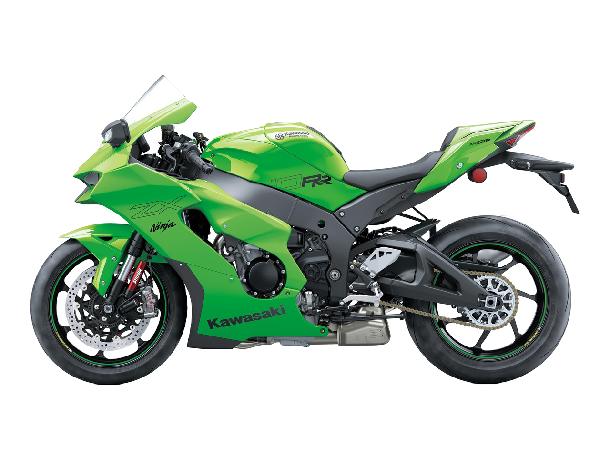

Ninja ZX-10RR SPECIFICATIONS
| Engine | 4-stroke, In-Line Four, DOHC, 16-valve, liquid-cooled |
| Displacement | 998cc |
| Bore x Stroke | 76.0 x 55.0mm |
| Compression Ratio | 13.0:1 |
| Fuel System | DFI®, 47mm throttle bodies and Variable Air Intake System (VAI) |
| Ignition | TCBI with Digital Advance |
| Transmission | 6-speed, return shift |
| Final Drive | Sealed chain |
| Electronic Rider Aids | Öhlins Electronic Steering Damper, Kawasaki Launch Control Mode (KLCM), Kawasaki Intelligent anti-lock Brake System (KIBS), Sport-Kawasaki TRaction Control (S-KTRC), Kawasaki Engine Braking Control, Kawasaki Quick Shifter (KQS) (upshift & downshift), Kawasaki Corner Management Function (KCMF), Power Modes (Full/Mid/Low) |
| Front Suspension | 43mm inverted Balance Free Fork, adjustable stepless rebound and compression damping, spring preload adjustability/4.7 in |
| Rear Suspension | Horizontal back-link with Balance Free gas-charged shock, stepless, dual-range (low-/high-speed) compression damping, stepless rebound damping, fully adjustable spring preload/4.5 in |
| Front Tire | 120/70 ZR17 |
| Rear Tire | 190/55 ZR17 |
| Front Brakes | Brembo dual semi-floating 330mm discs with dual radial mounted monobloc 4-piston calipers, Kawasaki Intelligent anti-lock Brake System (KIBS) |
| Rear Brakes | Single 220mm disc with aluminum single-piston caliper, Kawasaki Intelligent anti-lock Brake System (KIBS) |
| Frame Type | Aluminum perimeter |
| Rake/Trail | 25.0°/4.1 in |
| Overall Length | 82.1 in |
| Overall Width | 29.5 in |
| Overall Height | 46.7 in |
| Ground Clearance | 5.3 in |
| Seat Height | 32.9 in |
| Wheelbase | 57.1 in |
| Curb Weight | 465.4 lb |
| Fuel Capacity | 4.5 gal |
| Special Features | 4.3" Full-Color TFT Instrumentation, Smartphone Connectivity via RIDEOLOGY THE APP |
| Color Choices | Lime Green/Ebony |